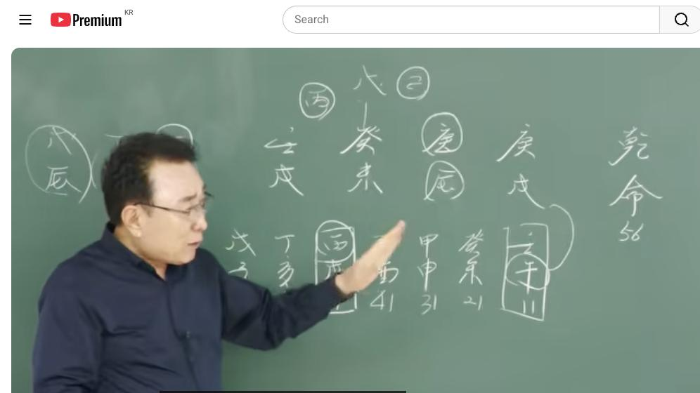

남촌물상TV 전체 문서 › 동영상 V0131
계수. 임수. 경금 내 사주 여기 영상에 답이 있다.

| 문서 번호 | V0131 (동영상) |
|---|---|
| 영상 URL | https://www.youtube.com/watch?v=A-cGeXzuXvk |
| 영상 ID | A-cGeXzuXvk |
| 게시일 | 2025-06-09 |
| 길이 | 31:08 (1868초) |
| 조회수 | 941회 (수집 시점 기준) |
| 카테고리 | Howto & Style |
| 자막 | ko (자동생성) |
| 수집 시각 | 2026-08-30 19:08 (KST) |
영상 설명 (YouTube 설명 원문 그대로)
물에 금이 놀 수가 있고 병화 운이 오면 정치를 한다.
물이 많아 제방과 목이 필요하여 부동산에 투자하여 큰 돈 벌었다
전체 자막 (352구간 · 타임스탬프 클릭 시 해당 장면으로 이동)
[0:02][음악]
[0:05]자, 밴드에 올린 사주를 지금 한번
[0:06]풀어보겠습니다. 남자 사주 56세
[0:10]경술, 경술, 개미, 임술 자, 이런
[0:13]사주입니다. 자, 우리가 얼른 봤을
[0:15]때 뭘 생각할까요? 자, 물이 많다는
[0:18]얘기는 물론 재방이 필요한 거죠.
[0:22]재방이.이 재방이 필요하다는 얘기는
[0:25]반드시 뭐예요? 관이 필요하다는
[0:28]얘기다 그 말이에요. 그럼 천간에는이
[0:30]임수 물과 계속 합했을 때는 물이
[0:33]많아지는 건데 무토에 대한 관이
[0:36]필요하다. 관이 필요하는
[0:38]거예요. 근데 지지에서 전부 다이
[0:41]진술 축미로 돼 있고 관이 많습니다.
[0:44]그럴 때 이런 사람의 경우를 성향은
[0:46]어떤 것인가? 제일 중요한게 항시
[0:49]우리는 뭐예요? 물이 많으면 큰
[0:52]재방으로 막고 싶다.이 말은 어떤
[0:54]거예요? 큰 재방이라 것은 큰 땅이
[0:56]필요하기 때문에 부동산을 갖고 싶은
[0:57]욕망 이거고 그다음에 여기 없는게
[1:01]뭐예요? 목화. 자, 없는게
[1:03]목이에요. 목과 화가 없다. 그러면이
[1:07]목이 없다는 얘기는 저기 그 경금에
[1:11]칼 자료 역할이 없다는 얘기
[1:12]아닙니까? 그러면 그것을 갖고 싶어
[1:14]하는 얘기야. 근데 이것을 우리가 그
[1:18]어 건설 용어로 쓸 때 하고 실질적인
[1:21]또 권력을 쓸 때하고 두 가지 방법이
[1:23]있잖아요. 근데 초창기에 갑신으로
[1:26]왔을 때는 쉽게 뭐예요? 조직 생활로
[1:29]갈 수 있는 효과 크고 그 말이고을
[1:31]유후에서는 본인이 을경합 신금에서
[1:35]병화를 끌어온다는 얘기는 뭔가 태양이
[1:37]올 때는 새로운 일을 한다는
[1:39]얘기예요. 얼른 생각 보면 구별이 될
[1:41]수가 있는 거예요. 자, 그러면이
[1:44]사람의 사주
[1:45]특성이 요약께서
[1:47]말씀드리자면 큰 물을 막을 수 있는
[1:50]무토 재방이 필요해서 뭐가 필요해?
[1:53]부동산이
[1:55]필요하다. 부동산이 갖고 싶은 욕망이
[1:58]이거예요. 그럼 나는 뭔가 큰
[2:00]부동산을 갖고 싶다. 그럼 여기에서
[2:02]만약에 재방이 무토로 생겨 있을 때는
[2:06]여기는 감목이란 나무를 심어야 되는데
[2:09]감목이 없다 그 말이에요. 없으니까
[2:11]어떻게 갖고 싶죠? 그러면 이제 첫째
[2:14]두 가지 합해 보니까 뭐가 나요?
[2:16]부동산 건축물 땅 아니에요.
[2:17]그러니까이 사람은 구동산과 건축물을
[2:20]갖게 되면 그다음에 갖고 있으니까
[2:23]뭐가 생각해? 여기에 경금이라는 칼을
[2:27]칼 자료를지고 싶다 그 얘기합니까?
[2:30]그럼 칼자루를지고 싶다는 얘기는
[2:32]우리는 뭐예요? 건설 뭐 이런 건축
[2:34]이런 관계성을 얘기하고 있는 거
[2:36]아니에요. 그러니까 칼 자루가
[2:37]생겼다는 얘기는 그 행위를 하고 싶다
[2:39]얘기고 그러면
[2:41]만약에 여기에서 이제 어떤 마음을 갖
[2:44]것이냐? 무리의 태양이 뜰 때는 어떤
[2:46]거냐 그 말이에요. 무리의 태양이 뜰
[2:48]때 여기서 우리가 항시 착각할 때가
[2:50]있어요. 해석할 때 대부분이 보시면
[2:52]그 쓰신 분들이 많이 그걸 잘 못
[2:54]씁니다. 그럼 왜
[2:56]그러냐면 여기에 병화가 뜬다. 태양이
[2:59]뜬다고 봤을 때 그냥 재물로만 온게
[3:03]아니라이 빛이 어떤다고요? 경금의
[3:07]빛을 발산시킨다 그랬잖아요. 이게
[3:09]이제 그 그 잘 이해하셔야 돼요.
[3:12]그러니까 자기의 재물과
[3:15]태양이 뜨는 명예가 동시 같이 온다
[3:18]할 수 있는 거예요. 그럴 때 어떤
[3:20]생각? 병라는 건 정치에 관련된
[3:22]생각이나 어떤 새로운 뭔가를 구상할
[3:25]수 있는 생각을 가지고 있다. 이렇게
[3:28]결론을 쉽게 지울 수가 있습니다.
[3:31]그래서 우리들은 이런 걸 봤을 때도
[3:32]이제 어렵다고 생각하지 마시고이
[3:34]사람이 가장 욕구로 가고 싶은게 뭐고
[3:37]하고 싶은게 뭐고 또 어떤 일 할
[3:40]것인가가 답이 정해진 거예요. 그
[3:42]이것을 이제 뭘로 하냐? 대운으로
[3:44]차근차근 분석하면이 사람이 어떤
[3:46]행위를 할 것이고 어떻게 갈 것인가를
[3:49]정확하게 파할 수 있다이 말입니다.
[3:51]그래서 우리들은 이제 어어 천재 과를
[3:54]먼저 따지기 때문에이 사람 죄는
[3:57]화죠. 화가 없어요. 그러 얼마나
[4:00]욕심이 막 갖고 싶어. 또 더군다나
[4:03]물은 흘러가는데 땅이 없어. 그러니까
[4:06]그 갖고 싶은 욕망. 그러니까 쉽게
[4:08]얘기해서이 사람은 없는 건 다 갖고
[4:10]싶지. 자, 쉽게
[4:14]보자면 자, 무토를 가지고 싶었다는
[4:18]것은 부동산에 관계된 일이고 또 없는
[4:22]목을 갖게다는 얘기는 이거 건축물을
[4:25]갖고 싶은 것이고이 욕망이 딱 정해진
[4:28]거예요.이 욕망이 수요 충족이 본인이
[4:31]됐을 때 사람이 그렇잖아. 우리가
[4:33]없다가 뭐가 생기고 뭐 땅이 생기고
[4:36]부동산이 생기면은 큰 욕심이
[4:38]생기잖아요. 그러면 자이 감목이란
[4:40]나무가이 무토 심어졌을 때는 저기의
[4:43]경금에 갖고 움직이고 싶다. 그럼
[4:45]뭐예요? 건설를 하고 싶다는 얘기고
[4:47]또이 칼루를 유용했을 때는 내가
[4:51]틀림없이 새로운 거 뭐 하고 싶을 거
[4:53]아니에요. 그다음에 그러면 여기서
[4:55]이제 태양이 피친다. 없는 돈을 벌릴
[4:58]거 아니에요. 그러면 태양이 피친다는
[5:00]얘기는 내 재물도 되지만은 항식
[5:03]국가에 관련된 일을 생각하 새로운 일
[5:06]태양은 매일매일 뜨는 거기 때문에
[5:08]새로운 일을 하고 싶다라고 결론을 볼
[5:10]수 있는 거예요. 그래서이 사람이
[5:12]하고 싶은 책 여기까 딱 정해진
[5:14]겁니다. 그러면 꿈이 이루어지는
[5:16]거예요. 세상 사는데. 그래서 우리는
[5:18]항시 사주 보실 때 일생일 때 어떻게
[5:22]그 사람이 흘러간
[5:23]과정을 이렇게 흘러가서 결론은 이렇게
[5:26]되겠구나 하는 것을 연상에서 다
[5:28]보시면 인생이이 사람의 걸어온 길을
[5:31]발자치를 꾸준하게 끝까지 볼 수 있는
[5:34]거예요. 이것이 우리가 볼 수 있는
[5:36]것입니다. 거기에서 잘못된 길을 갈
[5:39]때 좀 더 어떻게 하면 잘 갈 수
[5:42]있겠는가를 보게끔 하고 있단
[5:44]말이에요. 그럼 그 길을 만들어 주는
[5:46]일이 누구요? 우리가 하는 일이다.
[5:48]우리는 이러 이런 이런 길로 가게
[5:49]되면 당신은 잘 될 수가 있어 하는
[5:52]것을 해 준 사람이 우리가 할 의무다
[5:55]그 말입니다. 그러니까 이제 요거
[5:57]보시면 돼요. 자, 그다음에 이제에
[6:00]원국 해설로 보면 거의 다 끝났어요.
[6:02]원국 해서 보면. 그럼 우리가 이제
[6:05]아, 여기 이제 이모 대운부터 한번
[6:07]봅시다. 자,
[6:10]이모대운. 자, 이모대운이 오니까
[6:13]요때는 어떨 거예요? 자, 물이 하나
[6:15]더 생긴 거죠? 네. 그럼 물이 더
[6:17]성겼다는 얘기는 관이 더 필요했다는
[6:20]얘기입니다. 그것은 본인이 관이 더
[6:23]필요했다는 얘기는 뭔가이 새로운
[6:27]뭔가를 자기가이 재방 역할을 해서
[6:29]뭔가 해보었다 얘기거든요. 그러면 자
[6:31]물이 귀 흘러가서 안 된다 하면은
[6:33]잠깐만요.음 무슨
[6:36]물이 흘러서 박을 수
[6:39]없다면 우리는 어떻게 하라 그랬어요?
[6:42]해외로 가라 그랬잖아. 해로. 근데이
[6:45]우리 그때 당시 그 애국으로 갈 수
[6:47]있는 기회가 별로 없잖아요. 어렵다.
[6:50]이제 그럴 때는 어떤 역할이냐?
[6:52]아버지의 역할이 극히하다. 관의
[6:55]역할이. 그러니까 아버지가 역량이
[6:58]되면은이 사람은 학교를 가는 것이고
[7:01]아버지 영향이 안 되면 결과적으로
[7:03]학교도 못 가고 이런 형태가 채워지는
[7:05]거예요. 이제 이것을 우리는
[7:07]궁극적으로 쉽게 파악할 수가 있다이
[7:09]말입니다. 그게 얼마나 정확하게 볼
[7:11]수 있는 거예요. 그러면 자이 오하는
[7:14]그러면 뭐 무슨 틀을 가지고 있냐?
[7:15]여기 오 지지의 오는 여러분 생각해
[7:20]보세요. 자, 술토 술토가 세 개가
[7:23]있잖아요. 술토가 아니라 경신이어
[7:25]경신이지. 경신 경진 경진 경진이란
[7:30]말이에요. 자,
[7:32]그러면이 사람은 인호술에 지금 20대
[7:35]초반 여기까 20대
[7:37]40대까지 60대 80대 아니에요.
[7:40]그러면 여기에 오하는 어떤 역할을 해
[7:43]줄 것인가를 한번 딱 보시면 돼요?
[7:46]그러면 여기서 합을 이룬다. 3번이
[7:48]뭐가 있어요? 인이란 글씨가
[7:49]따라오죠. 일은 학교 중일 때
[7:51]교육이지. 그러면 자,이 얘가 하고
[7:54]싶은 얘기는 어렸을 때는 공부를
[7:56]얼마나 하고 싶겠냐 그 말이에요.
[7:58]뭔가를 잘해 보고 싶고 뭔가를
[8:01]이뤄보고 싶은 욕망이 굉장히 컸을
[8:03]것이다. 이렇게 보시죠. 그러면 자,
[8:05]공부는 잘했을까 못 했을까요?
[8:07]잘했어요. 잘했죠. 공부는 잘할 수
[8:09]있다. 진이 온다는 얘기는 여기에
[8:12]무토와 하크라 하면 기토가 되죠.
[8:15]그죠? 그러면 감목을 끌어올 수
[8:18]있다는 얘기예요. 각기 합도 할 수
[8:20]있고 감목을 끌을 수 있다는
[8:21]얘기입니다. 그러면 자, 각기
[8:23]합을해서 을목이 있을 때는이 국가
[8:26]자리에 경금을 하던 국립학교를 갈 수
[8:28]있고 그 말이고 국립대학을 갈 수가
[8:30]있고 그 말이고 그냥 모그로 때는
[8:33]사업학 사립학교도 갈 수
[8:35]있다. 그럼 우리가 각기 합을 했다
[8:38]그러면 을목이 됐잖아요. 그러면 자
[8:40]우리는 그냥 갑목이 왔는데 어떻게
[8:43]임료지 돼요? 할 수도 있죠. 여기
[8:45]묘가 묘가 없는데 어떻게 임묘지
[8:47]할까요? 할 수도 있다. 그
[8:48]말이에요. 그 얘기는 각기 합을 했을
[8:51]때는 을목도 될 수 있는 거예요.
[8:52]그래서 감목도 돼. 그러면 감목의
[8:54]뿌리는 인이 올 거고 각기 합은 묘가
[8:56]올거다 그 말이야. 그럼 임묘지는
[8:58]뿌리가 되기 때문에 대학을 갈 수가
[8:59]있어. 이렇게 결론을 지어 주면 된다
[9:03]말이에요. 됐죠? 그니까이 학교 그
[9:06]여부를 정확하게 파악을 하셔야 돼.
[9:09]학교 승산 여부 정확하셔야 한단
[9:11]말이야. 그럼 이걸 보시고 정확히
[9:12]하시면 돼요.이 사람이 이제 결혼의
[9:15]시점을 보자. 결혼 시점. 제일
[9:17]중요한 것은 이제 우리가 취업과 결혼
[9:19]아닙니까? 그럼 취업은 어느 때 할
[9:21]거냐라고 봐. 자, 개미 대운부터
[9:23]한번 봐봅시다. 미대운에. 자,
[9:25]개미대우면은 차근처 봐 보세요. 어느
[9:28]연도가 취업이 되겠는가? 취업은 어떤
[9:31]관계가 있을까요? 여기 오행에서 어떤
[9:34]관계가 연관이 될까요?
[9:36]관광이 관 취업은 항시 나의 관도
[9:41]중요하고 무엇도 중요하지만이 사주
[9:43]근처로 보면은 필요한게 국가장 이게
[9:45]움직여 줘야 돼.이 금이 움직여져야
[9:48]된다 그 말이에요. 취업 이때 어릴
[9:50]때 이때 아닙니까? 그러면 자
[9:52]여기에서 보시면
[9:54]갑을 때 아니에요? 칼자로 올 때
[9:57]이럴 때 취업하는 거예요. 그럼 어디
[9:58]취업해서 목에 칼자로 왔기 때문에
[10:01]결과 뭐예요? 건설 개 교통 학교로
[10:03]했을거다 그
[10:04]말입니다. 이제 이렇게 쉽게 그냥
[10:06]보시면 돼요. 자, 그다음에 그다음에
[10:10]결혼을 언제 한번 볼까? 결혼 아까
[10:12]결혼 여기서 결혼도 합이 있을 수
[10:15]있어요. 쉽게 여기에 개미 대운이란
[10:18]것은 미토가 부부 궁의 미토기 때문에
[10:22]해묘해서 목의 뿌리를 만들 수가 있는
[10:24]거예요. 부부의 합이 찾아올 때가
[10:27]있어. 이것을 이제 봤을 때 언제냐
[10:29]그 말이에요. 그럼 자 여기서면 인묘
[10:33]인내 여기 이걸 찾아야 돼. 이걸
[10:36]요렇게 하면 뭐예요? 해묘미가 되지.
[10:38]그러면 자 감목을 불러오지. 네.
[10:41]그러면 이제 이때는 첫째는 제일
[10:42]중요한 감 부부에 합이 이루어질 때를
[10:46]제일 잘 봐라. 그 말이에요. 합이
[10:47]이루어질 때 그러면 제일 편한
[10:50]거예요. 그래서 어 천간 합이 잘 안
[10:54]이루어졌어도 이런게 물이기 때문에
[10:56]재방이 오면 좋겠지만 본인이이 재방
[10:59]역할을 끌 수는 있어요. 있는데
[11:02]나무를 심지 않으면 안 되는 거지.
[11:05]그러니까 나무를 심어 놓으면 아까
[11:07]무너지지 않을 거 아니에요. 그래서
[11:09]그때 시기가 갑목을 끌어서 무기하
[11:12]심어 놓으면 해묘이 돼서 뿌리 형세
[11:14]때문에 결혼은 30이 좋다. 이렇게
[11:17]결론을 주어 주시면 돼요. 그러니까
[11:20]어려운 것이 아니라 첫째 괴로움을 전
[11:24]뿌리를 찾아라. 그다음에 천관의
[11:26]천관의 관계성을 엮어서 같이 뿌리를
[11:29]찾아보는 것이 제일 좋다. 없을 때는
[11:31]그리 없을
[11:33]때는 부부의 합의 위주로 찾아봐라.
[11:37]이게 이제 결혼 시기처럼 보는
[11:38]거예요. 음. 근데 하다 보면 나
[11:41]그때 안 했는데 한 사람도 있지.
[11:42]그럼 어긋나 어긋날 때가 많아요. 그
[11:44]사람은 그 사람은 준비가 안 된
[11:46]상태에 결혼하게 되면 고생은 하는
[11:49]겁니다. 그래서 이럴 때 결혼을 하게
[11:51]되면 준비가 돼 있을 때예요. 자,
[11:53]여기 보세요. 자, 여기 보면이 무의
[11:56]무의 무토론 마고 무기합 기토가 될
[11:59]거 아니에요. 근데 여기서 이제
[12:00]여러분 착각할 때
[12:01]뭐냐면 무기합의 합도 될 수 있지만
[12:04]재방 역할도 됩니다. 왜? 물은
[12:07]합해져 있는 물이기 때문에 재방을 쓸
[12:09]수도 있어요. 그러니까 이때가 안정도
[12:11]됩니다. 근데 부부궁이 합은 안 돼.
[12:14]이노술에서 뭔가는 돈은 준비가 돼
[12:17]있다 그 말이에요. 그러면 자 이때
[12:19]만약에 그 이전에 결혼할 때는 준비가
[12:21]안 될 때 결혼한 거거든요. 그러면
[12:23]자이 무술이 무토방이 막어져 있고
[12:27]지지에 인오술이 된다 그 말입니다.
[12:30]그러면 돈이 준비가 돼 있는 상태
[12:34]결혼은 기미 감목을 끌어다 신고 합이
[12:37]이루어질 때가 좋다. 그러면 사제의
[12:39]준비가 돼 있어요, 안 돼 있어요?
[12:40]돼 있다. 이렇게 오는 거예요.
[12:43]그러니까 그 이전에 만약에 정축이나
[12:45]병자 한번 해봤다고. 병자 자 의뢰
[12:47]의뢰 뭐 아무것 이것도 안 돼. 안
[12:50]된다고 보면. 그러니까 준비할 때는
[12:52]뭐예요? 돈이 없거나 준비가 안 돼
[12:55]있어서 어렵게 결혼하는 거예요. 이때
[12:57]결혼을 하게 되면 준비가 어느 정도
[13:00]다 돼 있고 안정될 때 결혼 할 수
[13:02]있다. 이렇게 쉽게 정확히 볼 수
[13:04]있는 겁니다. 그래서 우리는 이제
[13:05]저런 걸 보시고 쉽게 아 결혼 시기가
[13:08]어느 때가 좋구나. 이때 결혼하면
[13:10]너는 좋아. 이렇게 설명을 해 주시면
[13:13]돼요. 그러니까이 어렵다고 생각해고
[13:16]배우신 대로만 집어서 하시면 돼.
[13:18]사실은 기초에서 이제 그 배웠던 것이
[13:22]조금 틀린게 뭐냐면 요런 데서는 이제
[13:24]그 볼 때는 무게 합의 기토요 이렇게
[13:27]하는데 큰 물고 차업받니까 우리 전체
[13:29]아루 아를 봐라. 계수 물이 임수가
[13:33]합해지면 큰 물이 됐잖아. 이걸
[13:34]강물로 보라 그 말입니다. 그래서
[13:36]무토가 막어지면은 재방 역할로 보라
[13:39]그 말이에요. 무기합도 중요하지만
[13:41]그러면 자 여기서 잘 볼 때 이해하실
[13:43]때 관이 와서 무턱 올 때는이 그
[13:47]역량이 본인이 무토를 끌어온다고
[13:50]생각하시면 되지. 그럼 소기가 자기가
[13:53]그 관을 만들 수 있는 역이 됐다고
[13:55]보시면 돼요. 그러기 때문에 임속하고
[13:58]계수가 합하면 큰 물이 돼서 결과
[14:00]무토로 재방 역할을 충분하게 할 수
[14:02]있다라고 보시면 된다 그 말입니다.
[14:04]이해되시죠? 그 정확하게 그냥 설명이
[14:07]하 끝나는 거예요. 그래서이 부분
[14:09]오늘 이해할 것은 계수와 임수의
[14:11]관계에 따라서 어떻게 무토 역할을 할
[14:15]수 관 역할 할 수 있는가를 보셔야
[14:17]됩니다. 제 우리가 이제 유튜브 보신
[14:20]그 선생님들도 여기 혼전을 해서 각꾸
[14:23]문의가 들어온 분일 때가 있어요.
[14:25]그니까 이런 걸 보시고 공부하시면
[14:28]아마 넉넉하게 얼마든지 좋은 공부가
[14:30]될 것이고 나중에 추후 영상을 보셔도
[14:33]좋은 공부가 될 것입니다. 다음
[14:34]시간에도 좋은 영상 보내주서
[14:35]감사합니다. 니다.
[30:54][음악]
칠판 원국 판독 (영상 프레임을 AI가 시각 판독 · 원판 대조 필수)
乾造
천간
庚
천간
庚
천간
癸
천간
壬
지지
戌
지지
辰
지지
未
지지
戌
판독 신뢰도: 높음
판독 노트: 칠판 4주(우측이 년주)+순행 대운 辛巳11~丁亥71(丙戌61 박스), 乾命 56 · 시점 13:15 · 해당 장면 보기↗
자막은 YouTube에서 제공하는 한국어 자동음성인식(ASR) 트랙의 원문입니다. 고유명사·한자 용어·숫자 표기에 자동인식 특유의 오류가 있을 수 있어, 원문을 가능한 한 그대로 보존했습니다. 위에 칠판 원국 판독 섹션이 있는 영상은 화면 프레임을 AI가 시각 판독한 것으로 신뢰도 표기를 확인하고, 없는 영상은 화면 도표가 문서에 포함되지 않습니다.